In typical FME workflows with discrete data, you may load, sort, and group the data before analyzing it. With streaming workflows, the data is continuous and possibly infinite, making it impossible to load all the data before processing and analyzing it. The TimeWindower transformer groups data into windows by adding a Window ID attribute to the data based on the time the transformer receives the data record or the record's timestamp. Once you break the data into groups, you may process and analyze it as if it were discrete data.
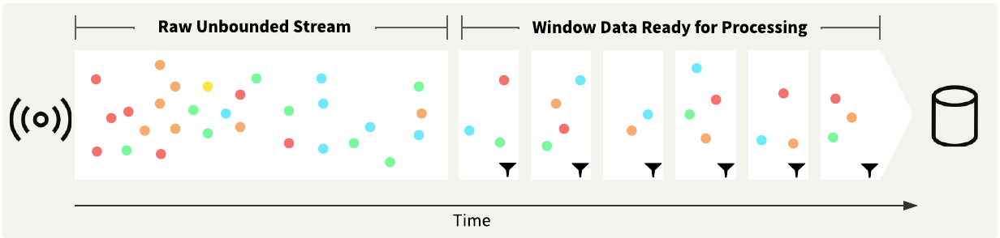
The TimeWindower parameters control how FME groups the data records, when each interval begins, and how long each interval is. The time units options range from seconds to days. The Window ID Type refers to how FME documents each record within a window, either by assigning a window ID number or by using the timestamp that marks the beginning or end of the window. You may also control whether the first window begins when the workspace starts, when the first record is received, or at a specific timestamp.
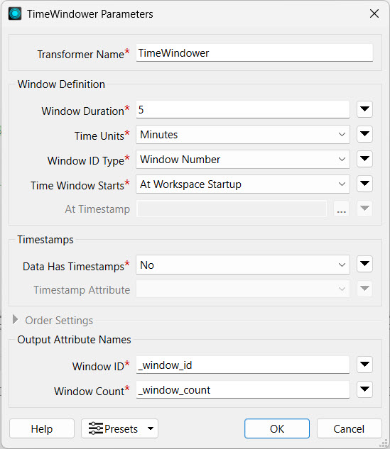
The TimeWindower assigns a new attribute a value identifying which window the record belongs to. You likely will process the data further, grouping it by the window. The TimeWindower does not control the number of records in each window - the records are only grouped by time, not by count. It is possible to have high volumes of data records in one window, followed by a window with no data records at all, which depends on the velocity and rate of the streaming data.
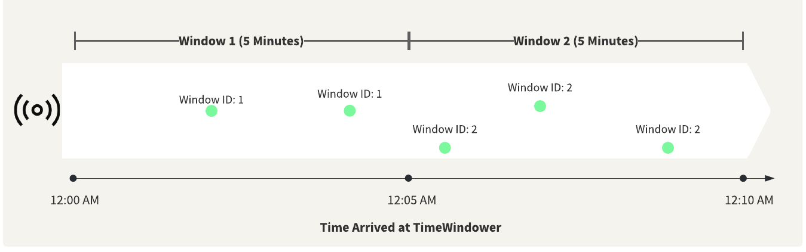
Processing Records Out of Order
In many cases, there may be a slight delay between when a sensor detects or submits data and when the data arrives at FME, which may result in FME receiving and processing data records out of order.
If your data includes timestamps as an attribute, you can enable this option in the TimeWindower. Then, instead of windowing the data from the time the record arrives to the TimeWindower, it windows the data using the timestamp attribute value assigned to each record. The Order Settings enforce the order of the records through the output port. Records that did not follow the specified window ordering will be sent to an OutOfSequence port, unless they arrive within the Tolerance Interval. If a record arrives outside of its window, yet within the tolerance amount, FME will still accept it and assign it to the correct window. If a record is too early or too late, meaning it falls outside the tolerance time amount, the TimeWindower directs it to the OutOfSequence port.
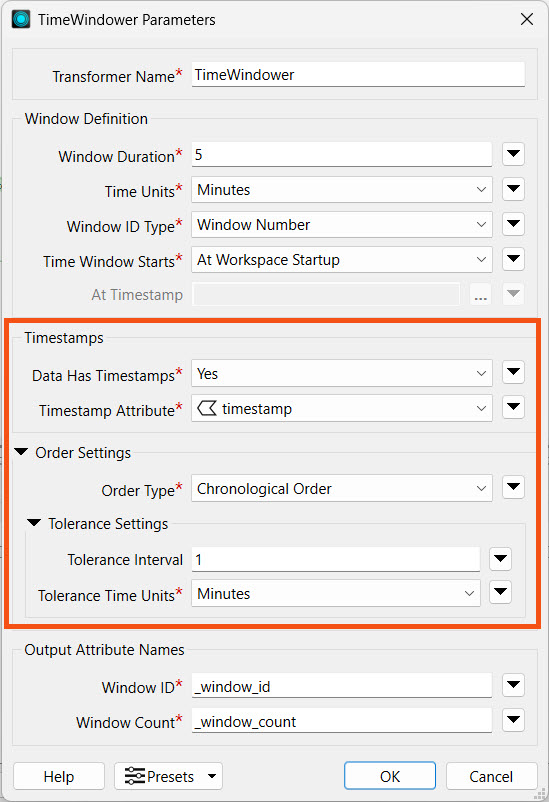
For example, with a window duration of 5 minutes and a tolerance interval set to 1 minute, any records that arrive within a minute before or after their correct window will still be accepted into the window. The red record with the 12:03 AM timestamp should be in Window 1, but the TimeWindower did not receive it until Window 2 began. Since it is over the 1-minute tolerance interval, the TimeWindower will route the record to the OutOfSequence port.
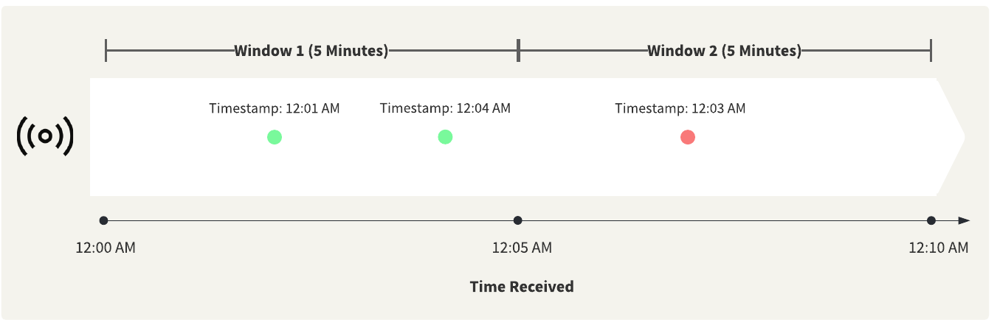
Exercise (15 minutes)
So far, you've helped Jennifer identify trucks that are outside of the City of Vancouver boundary. Each vehicle reports its location roughly every 3 seconds. When you run your workspace in Stream mode, this means that a data record may be produced for each vehicle outside the city boundary every 3 seconds. If you were to configure alerts for each record, that would result in an almost constant pinging of alerts for a truck that is outside the city. To avoid this, Jennifer has set a threshold of one minute, which you will use to window the data into, so that an alert only sends once per minute for each vehicle.
In this exercise, you will:
Configure a TimeWindower transformer to group data into one-minute windows.
Add Sorter and Sampler transformers to get the last known point of a truck in each window.
Continue with the same workspace open in FME Workbench from the previous exercise.
1) Configure TimeWindower Transformer
Add a TimeWindower to the canvas and attach it to the Failed port on the SpatialFilter.
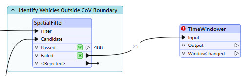
Open its properties. Set the following settings:
Window Duration: 1
Time Units: Minutes
Window ID Type: Window Number
Time Window Starts: At Workspace Startup
Leave the remaining settings at their default value.
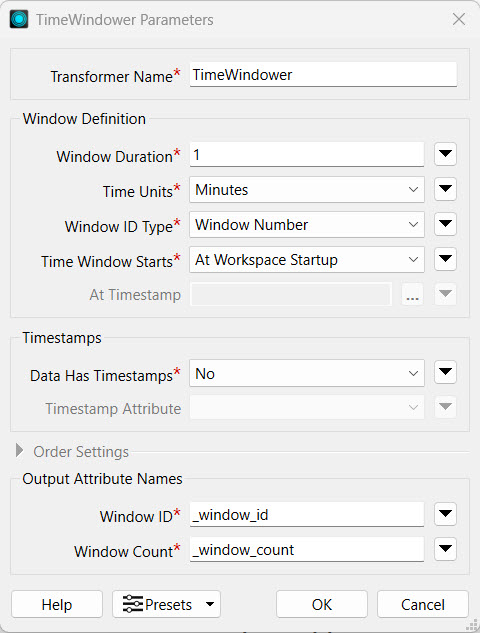
The Timestamps function in TimeWindower is used to identify out-of-sequence records and reorder them chronologically within a specified tolerance interval. Although our stream data has a timestamp attribute, we don't need to use it for this scenario because it doesn't matter in this scenario if our data is out of order. We will sample the data later to just get one record per vehicle in each time window. Also, because our stream is simulated, our timestamps are not quiet accurate - they are dated in the past.
2) Run the TimeWindower
Use the Run To This function to run the cached data through the TimeWindower transformer. Inspect the Output data cache.
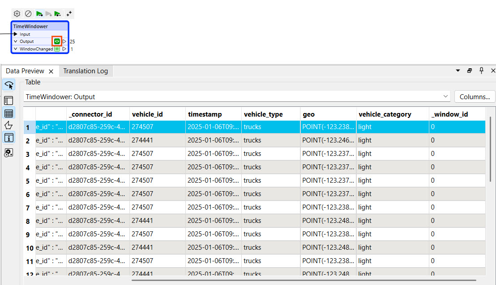
The TimeWindower adds a _window_id attribute to each record, and multiple records exist for each unique vehicle_id. The batched data likely did not capture enough data to span one minute, so the _window_id will not update. When you run the workspace in Stream mode later, you will be able to see it change after each minute.
3) Add a Sorter
From within each time window, you only need the latest location for each truck, and there are multiple data records for a single truck within the same time window. A Sampler transformer will allow you to query the last known location of each truck within the window, but first, you need to sort the data by vehicle_id and timestamp.
Add a Sorter transformer and connect it to the TimeWindower output port.
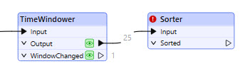
Open the Sorter properties and enable Group Processing. Select _window_id to Group By and set Complete Groups to When Group Changes (Advanced).
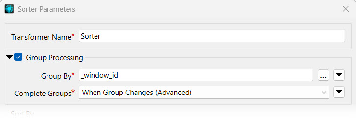
Set the Sort By Attribute to both vehicle_id and timestamp. Set the method to Alphabetic for both and keep the Order as Ascending.
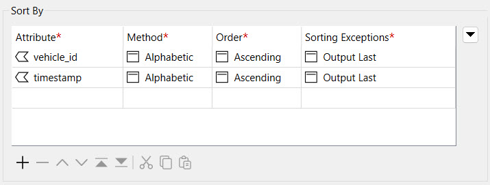
Close the Sorter Parameters.
4) Add a Sampler
Now that your data is sorted chronologically and by vehicle_id, a Sampler transformer will enable you to query the last known location of each truck within the window.
Add a Sampler transformer and connect it to the Sorter.
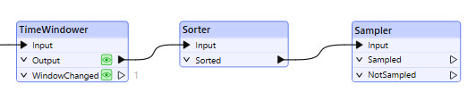
Open the Sampler parameters. Enable Group Processing and Group By _window_id and vehicle_id. Set Complete Groups to "When Group Changes (Advanced)".
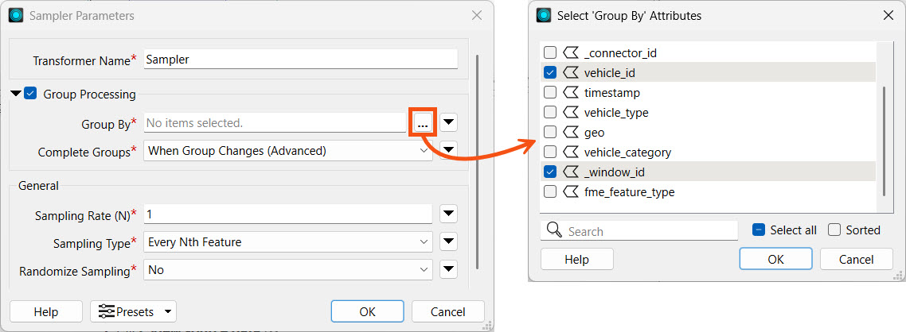
Set the Sampling Type to 'Last N Features' and leave the remaining settings as their defaults.
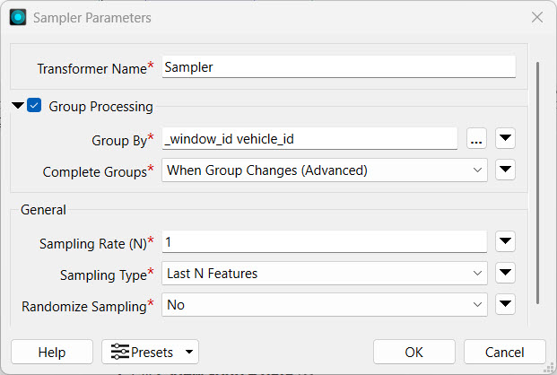
4) Bookmark TimeWindower, Sorter, and Sampler
To continue documenting our workspace, add a bookmark surrounding the TimeWindower, Sorter, and Sampler.
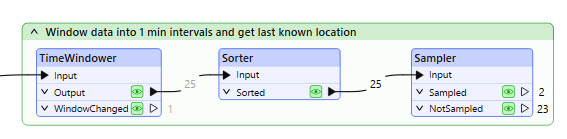
5) Switch to Stream Mode
You may use Run To This on the Sampler to see how the batched data is sorted and sampled; however, this likely does not include a time window change. To see how it functions with multiple time windows, you will need to switch to run the workspace in Stream mode.
Return to the KafkaConnector and open its parameters. Under Receive Behavior, set the Mode to Stream.
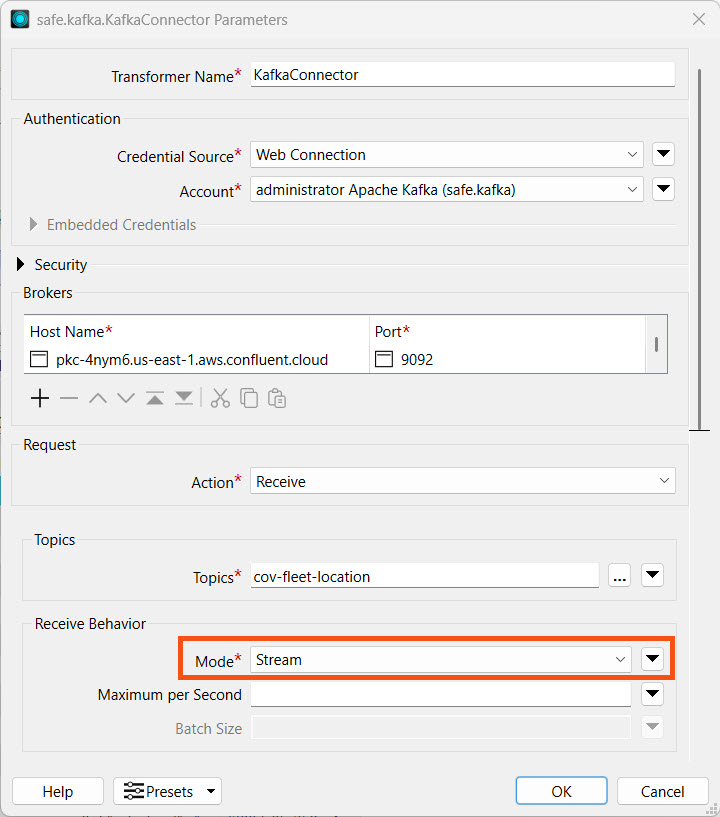
Click OK to close the window.
6) Run Workspace in Stream Mode
Click Run to start running the workspace.
When the workspace runs in Stream mode, it will continue to run until you manually stop it. You will also not be able to view caches of data beyond the Kafka Connector.
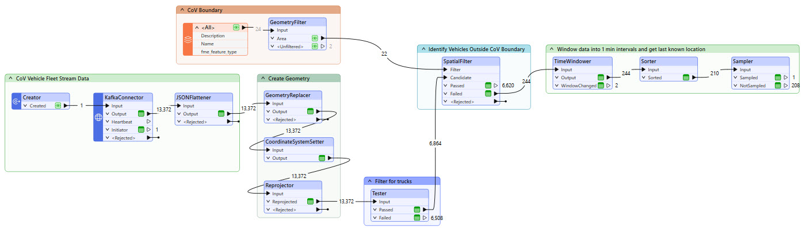
The record counts at the Sampler's Sampled port represent the vehicles located outside the City of Vancouver boundary within each one-minute window. These are the records for which Jennifer wants to send a notification.
Remember that the TimeWindower groups data into one-minute windows and the Sorter sorts the data in each window. To receive records from the Sorter to the Sampler, you must let the workspace run for at least one minute to complete the first time window.
7) Stop the Workspace
Click Stop to stop the workspace. You need to manually stop it because it will run indefinitely in Stream mode.
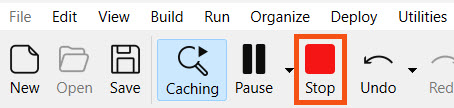
Now that you have filtered and grouped your stream data records, you will configure an alert to be triggered every minute for trucks outside Vancouver.